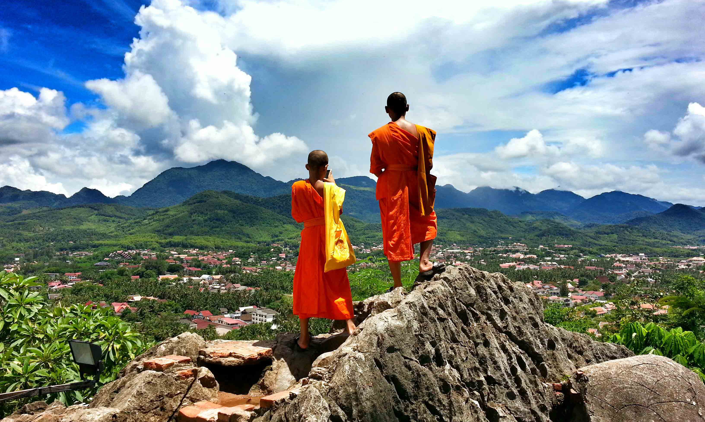

D'autres horizons
Notre algorithme a déterminé que vous avez besoin de vous exporter, découvrir le monde et apprecier l'authenticité de la vie
C'est parfait, pour vous, nous vous proposons un panel de destinations aussi surprenantes que magnifiques. Bien sur vous ne choisirez pas, mais faites vous déjà une idée de votre futur expérience avec la description d'une des destinations que nous proposons!
"Le Laos: à la découverte de paysage fabuleux"
C’est un petit pays entre la Thaïlande, le Cambodge et le Vietnam qui n’a pas d’accès à la mer mais qui, pourtant, fait l’unanimité chez les Backpackers, les familles ou encore les voyageurs individuels car il offre nature et dépaysement.
Ce « pays au million d’éléphants » regorge de surprises à découvrir sans attendre et voici pourquoi :
Visiter le Laos a quelque chose d’apaisant. Plus tranquille, plus authentique et préservé que les pays voisins : il est agréable d’y voyager si vous n’appréciez que peu la compagnie des autres touristes ! Vous y retrouverez un côté calme et sauvage que l’on retrouve moins chez ses pays limitrophes. Le Laos cultive une tranquille nonchalance, rythmée par le cours du Mékong, véritable colonne vertébrale du pays.